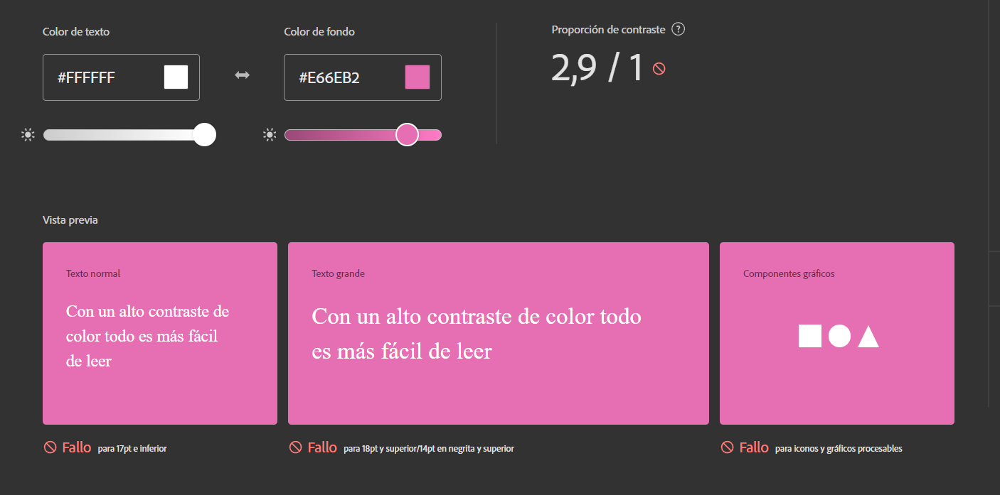
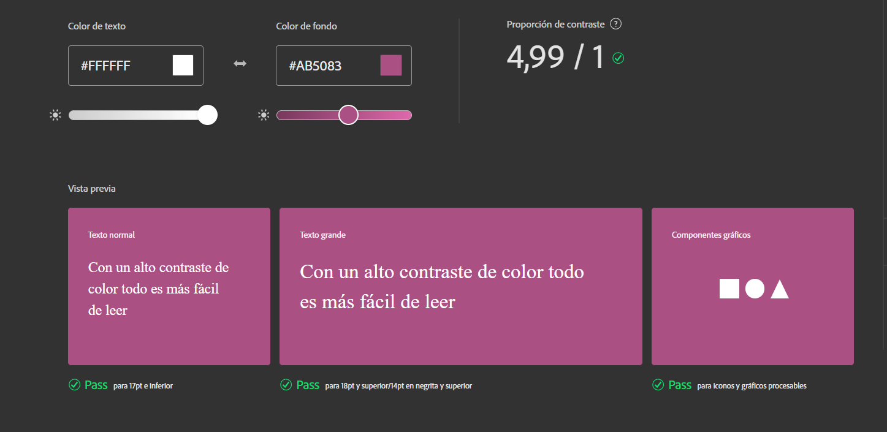
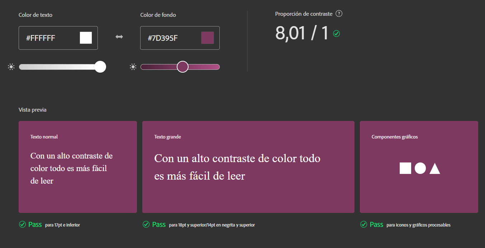

Textos más legibles
Tipografía
Realizar un documento html donde incluyan etiquetas que vimos en la clase, por ejemplo:

Contrastes



Tamaños de fuentes
- Unidades de medida relativas
- Nunca menor a 10 puntos
- Interlineado
- Interletrado